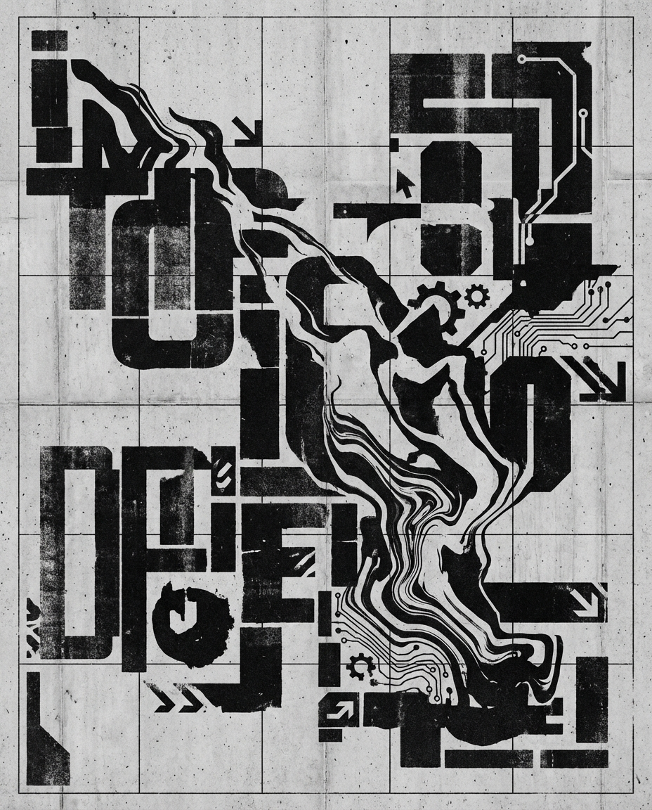

AI PRODUCTIVITY × SDLC
2026-03-28
「AIで遅くなる」のは正しい——生産性データの逆説と259件のリリースノートが描く変革の本質
「AIを使うと開発者が19%遅くなった」と「Claude Codeが259件のリリースノート」という矛盾する事実が示す、AI時代の組織変革の本質。個人の遅さと組織の速さは別物だ。
「AIを使うと開発者が19%遅くなった」と「Claude Codeが259件のリリースノート」という矛盾する事実が示す、AI時代の組織変革の本質。個人の遅さと組織の速さは別物だ。
「AIを使うと開発者が19%遅くなった」と「Claude Codeが259件のリリースノート」という矛盾する事実が示す、AI時代の組織変革の本質。個人の遅さと組織の速さは別物だ。

FDE求人800%急増、Macrohard構想、SaaS株2850億ドル消失——一見無関係な3つの事象を「誰がタスクを実行するのか」という一本の問いで貫く。

Legal Engineer急増、CrowdStrike株5%下落、ファウラーの「on the loop」。職種名と株価は、担い手の交代を実際の事業変化より先に可視化する先行指標だ。
2026年Q1、45,000人が解雇されAI求人が92%増。コスト削減ではなく、組織設計哲学の根本的転換だ。2028年に中間管理職が消滅するという根拠ある予測。
コードを書かないエンジニア、AIを指揮するデザイナー、AIエージェントを監督するマネージャー——全職種が同じ方向へ同時移行中。職種の境界が消えた後の世界とは。